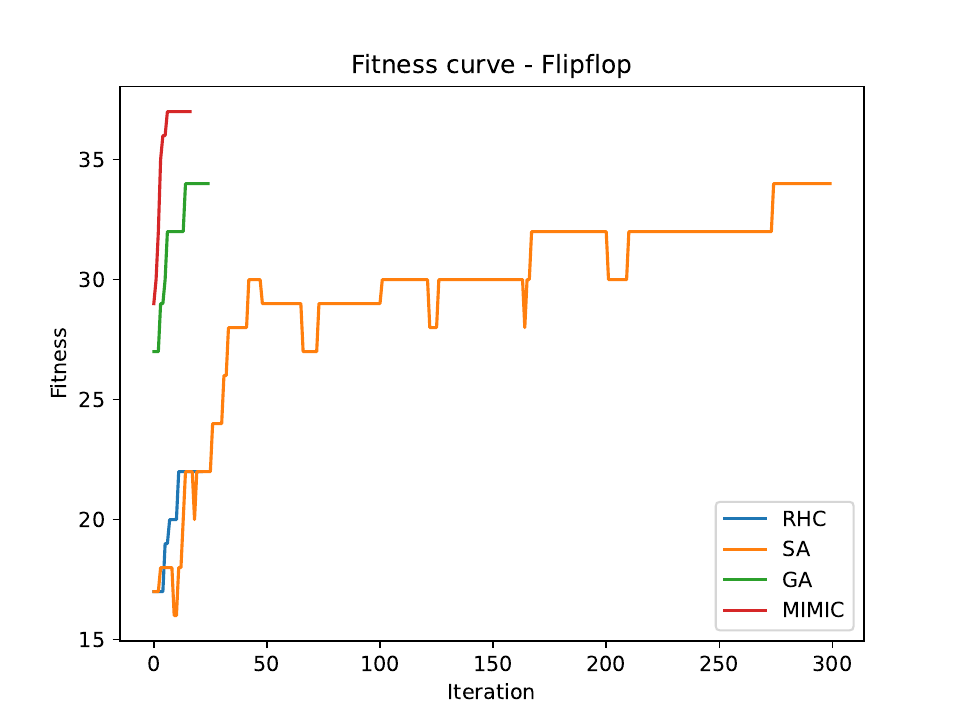
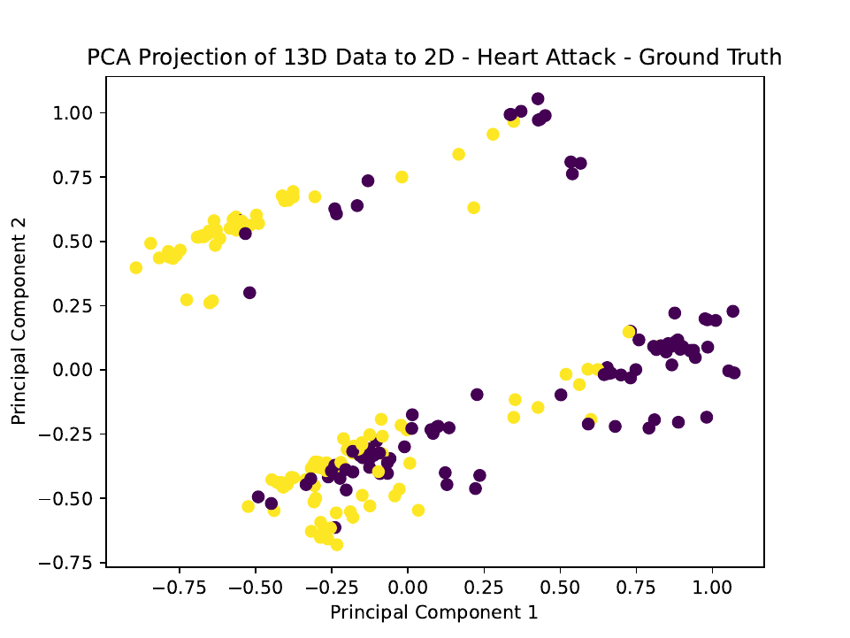

The studies
Georgia Tech’s Machine Learning course asks for four analyses. In each, students run a family of algorithms on problems they choose and explain, in a short paper, why the algorithms behave as they do. These were mine.
Supervised learning
I compared decision trees, boosting, neural networks, support vector machines, and k-nearest neighbors on two datasets of very different difficulty: 303 patients described by 13 health measurements and labeled by their risk of a heart attack, and 5,000 images of handwritten digits. For each method I tuned its main settings and traced the error against training size and model complexity, to see where it underfits or overfits. The small, simple dataset was learned best by decision trees and boosting, and the images by a neural network.
Randomized optimization
I compared four search methods that need no gradients, random hill climbing, simulated annealing, a genetic algorithm, and MIMIC, on three test problems: One Max, FlipFlop, and N-Queens. Each did best where its design fits. Simulated annealing solved the simplest problem about 50 times faster than the genetic algorithm. The genetic algorithm, which searches from many points at once, did best on Queens, and MIMIC, which models how the variables depend on each other, did best on FlipFlop.

I then used three of the methods in place of backpropagation to train the weights of the neural network from the first study. Gradient descent still reached the lowest error.
Clustering and dimensionality reduction
I clustered the same two datasets with k-means and Gaussian mixture models, reduced their dimensions with PCA, ICA, random projection, and Isomap, and clustered again in the reduced spaces. Both clustering methods found four groups in the heart data rather than the two labels. Projected onto two dimensions, the two classes overlap, which suggests a continuum of risk rather than two clean groups.

Finally I retrained the digit network on reduced data. Isomap cut its training time by about 80% at a small cost in accuracy, from 92.7% to 90.4%, and adding each image’s cluster as one extra feature improved its accuracy on unseen digits.
Decisions under uncertainty
I solved two Markov decision problems with value iteration and policy iteration, which need a model of the problem, and with Q-learning, which learns from experience alone. The problems were Blackjack, with 290 states, and Frozen Lake, a grid world of up to 20 by 20 squares in which one square in ten is a hole and moves can slip sideways. Value and policy iteration converged quickly, even on the largest grid. Q-learning needed tens of thousands of iterations, about 100,000 for Blackjack, and its policies were still not optimal: the cost of learning without a model.